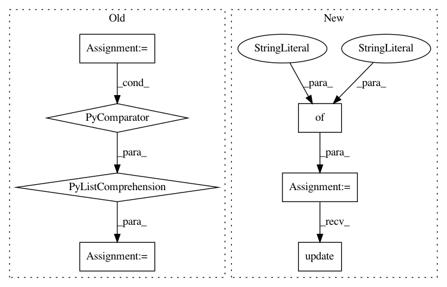

5810701ca3a9fae4ef3baada2a137ee5a660353b,noxfile-template.py,,,#,25
Before Change
// DO NOT EDIT - automatically generated.
// All versions used to tested samples.
ALL_VERSIONS = ["2.7", "3.6", "3.7", "3.8"]
// Any default versions that should be ignored.
IGNORED_VERSIONS = ["2.7"]
TESTED_VERSIONS = sorted([v for v in ALL_VERSIONS if v not in IGNORED_VERSIONS])
//
// Style Checks
//
After Change
// with `noxfile_config.py`. Users will copy `noxfile_config.py` into
// their directory and modify it.
TEST_CONFIG = {
// You can opt out from the test for specific Python versions.
"ignored_versions": ["2.7"],
// Declare optional test sessions you want to opt-in. Currently we
// have the following optional test sessions:
// "cloud_run" // Test session for Cloud Run application.
"opt_in_sessions": [],
// An envvar key for determining the project id to use. Change it
// to "BUILD_SPECIFIC_GCLOUD_PROJECT" if you want to opt in using a
// build specific Cloud project. You can also use your own string
// to use your own Cloud project.
"gcloud_project_env": "GCLOUD_PROJECT",
// "gcloud_project_env": "BUILD_SPECIFIC_GCLOUD_PROJECT",
// A dictionary you want to inject into your test. Don"t put any
// secrets here. These values will override predefined values.
"envs": {},
}
try:
// Ensure we can import noxfile_config in the project"s directory.
sys.path.append(".")
from noxfile_config import TEST_CONFIG_OVERRIDE
except ImportError as e:
print("No user noxfile_config found: detail: {}".format(e))
TEST_CONFIG_OVERRIDE = {}
// Update the TEST_CONFIG with the user supplied values.
TEST_CONFIG.update(TEST_CONFIG_OVERRIDE)
def get_pytest_env_vars():
Returns a dict for pytest invocation.
In pattern: SUPERPATTERN
Frequency: 3
Non-data size: 7
Instances
Project Name: GoogleCloudPlatform/python-docs-samples
Commit Name: 5810701ca3a9fae4ef3baada2a137ee5a660353b
Time: 2020-05-15
Author: tmatsuo@google.com
File Name: noxfile-template.py
Class Name:
Method Name:
Project Name: GoogleCloudPlatform/python-docs-samples
Commit Name: 8c18cecf15a8935d8bf712edcc91ac05daf2176e
Time: 2020-06-16
Author: tmatsuo@google.com
File Name: appengine/standard/noxfile-template.py
Class Name:
Method Name:
Project Name: mlflow/mlflow
Commit Name: 06e9433720845ab9f12e7ea0d8a8982123f093c6
Time: 2020-12-18
Author: 39497902+dbczumar@users.noreply.github.com
File Name: tests/tracking/fluent/test_fluent_autolog.py
Class Name:
Method Name: test_universal_autolog_calls_specific_autologs_correctly